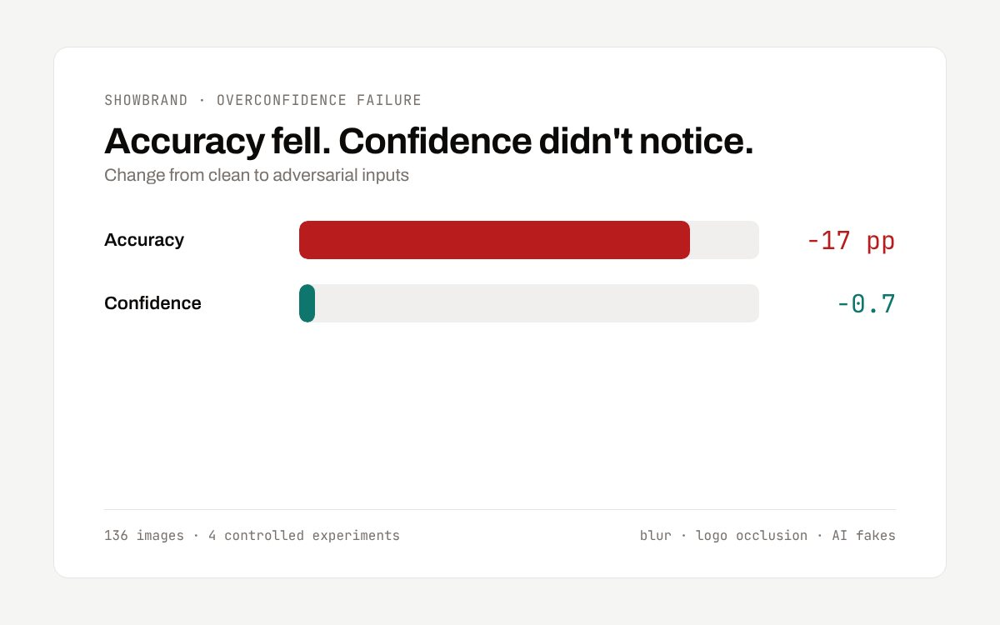
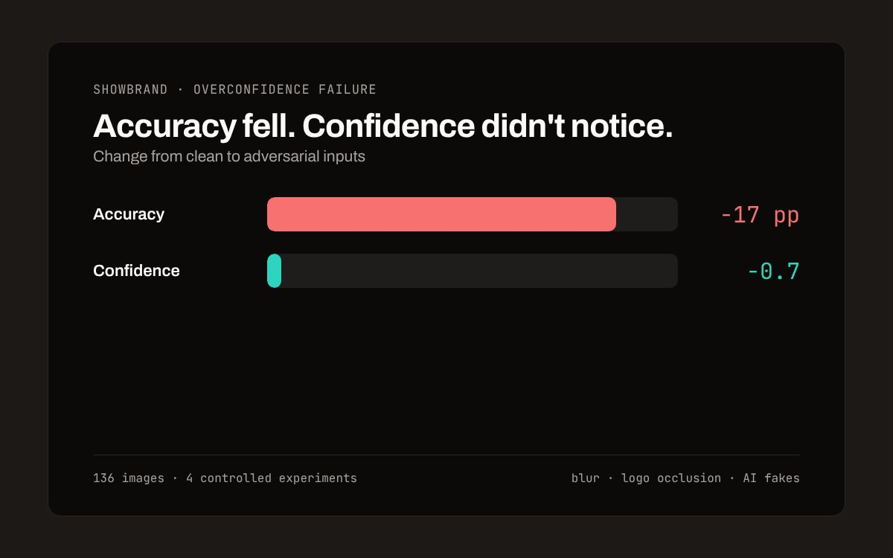

ShowBrand
An AI product recognition app, tested on degraded and manipulated photos until it broke.
Personal project, then UCSD FMP research with Prof. Pengtao Xie (ECE)
Accuracy fell 17 percentage points under adversarial inputs while confidence moved 0.7
- Python
- PyTorch
- OpenCV
- CLIP
- MobileNet
- Next.js
- Claude API
Read the details
- Problem
- Marketplaces and authentication apps act on a model's confidence score. If confidence stays high while accuracy falls, every threshold built on it fails without warning.
- What I built
- Stress tests of a vision LLM against blur, logo occlusion and AI fakes in 4 controlled experiments on 136 images
- Shipped the findings into the full-stack app (Next.js, Claude vision) as confidence thresholds, a low-confidence retake prompt and risk-based wording
- Result
- With logos occluded, brand accuracy fell 17 points while confidence fell only 0.7. Named the pattern Overconfidence Failure. Presented at MURALS 2026 and selected for the UCSD Undergraduate Research Hub Student Spotlight.